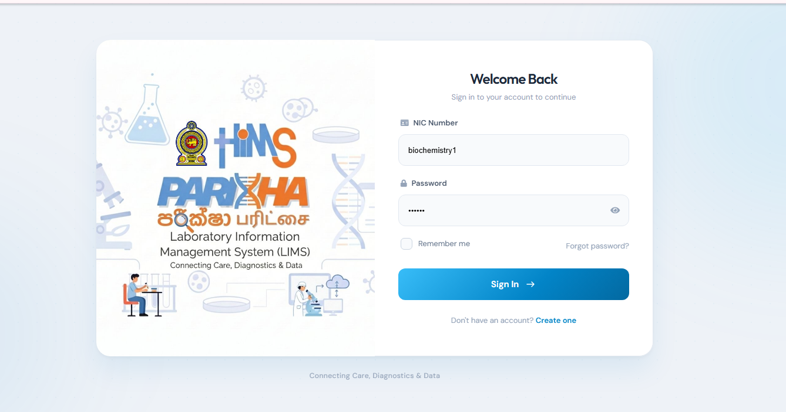

Laboratory Information Management System
Developed as part of the Hospital Information Management System for Teaching Hospital Peradeniya while working with the Loons Lab development team. The system supports laboratory workflows spanning registration, specimen handling, barcode identification, analyzer integration and result reporting.
LaravelPostgreSQLHL7Analyzer integrationBarcode workflows
Read the case study ↗
